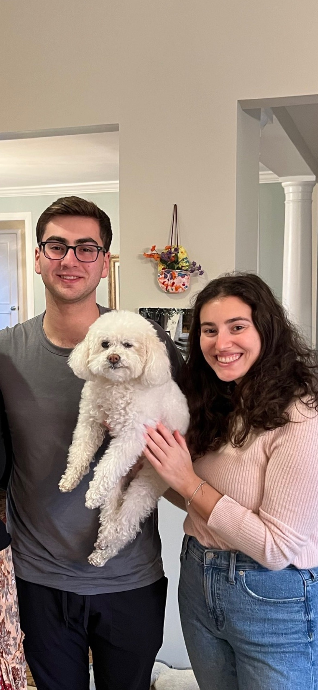

On this page you can find some information about my family
They are the most important people in my life and I love them all very much. I will be talking about my parents, my sisters, and my dog.

This is my mom, Ayelet. She was born in Israel and moved to the United States when she was only five years old. When she arrived in the United States, her family moved around New York and eventually settled in Long Island. Even though she moved to the United States wehn she was five, she is still fluent in Hebrew. Ayelet has recenctly gotten into painting and gardening in the past couple years over the COVID pandemic.

This is my dad, Rick. He was born and raised in Long Island, New York. He actually met my mom in high school and they have been together ever since. After attending the University of Michigan, he recieved his JD from Hofstra University. He now works as Deputy General Counsel at Assured Healthcare Partners in New York City. On the weekends he loves to hang out with his family and friends, watching sports or tv shows. He has been a lifelong Jets and Yankees fan. His favorite tv shows is Breaking Bad.

This is my sister, Jolie. She is the oldest out of me and my other sister. Jolie graduated from the University of Michigan in 2019 with a concentration in psycology. She now lives in New York City and works for American Express as a Portfolio Loyalty Marketing Senior Analyst. Aside from work, some of her hobbies include Jazz Music and designing shoes. Ever since she was young, she would always by blank canvas shoes and style them for her family and friends. Recently she has gotten into Jazz music as she frequently goes to Jazz peformances around New York City.

This is my sister, Nicole. She is the middle child between Jolie and I. Nicole graduated from The University of Michigan in 2022, majoring in Philosophy, Politics, and Economics. After taking a gap year, she will be attending Georgetown University to gain her Masters in Public Policy. One of Nicole's favoirte hobbies is to travel. During her gap year, she completed internship programs in Israel and Australia. Aside from traveling, another one of her hobbies is hiking. In the photo, you can see Nicole and I during a hike in Israel this summer from when I went to vist her.

This is my dog Ralph. My family rescued him about five years ago and although we do not know his exact age, we expect him to be about 12 years old. Ralph is a Bichon & Poodle mix. At times he can be very grumpy, but at other times he can be sweet and caring. His two favorite activities are laying on the couch watching tv with my dad and barking when the doorbell rings.